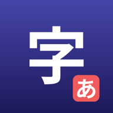

KanjiKanaTrainer
Write Chinese characters and Japanese kana, one stroke at a time.
Watch a character draw itself in the correct stroke order, hear it spoken, then write it yourself with Apple Pencil or a finger and get a friendly score. Made for young learners in Mandarin immersion classes, and just as useful for grown-ups.
Getting started
- Choose Chinese, Hiragana or Katakana on the home screen.
- Pick a set, such as the numbers 1 to 10, a theme like family or food, or a kana row.
- Use Demo to watch each character drawn and hear it read aloud.
- Use Practice to write it yourself, then tap Evaluate.
Questions
How is my writing scored?
The score checks what a teacher checks: the right number of strokes, written in the right order and direction, in roughly the right shape. It is forgiving about exact shape, so young writers are not marked down for wobbly lines. Above 80% shows "Great job!"; below that, a hint says whether to watch the stroke order again or match the shape more closely.
Where is my progress kept?
On your device. Each character shows your best score and how many times you have practised it. Deleting the app deletes your progress.
I can't hear the pronunciation.
Check that the device is not on silent and the volume is up. The app uses the voices built into iOS; if a voice is missing, add it in Settings → Accessibility → Spoken Content → Voices (Chinese, China mainland, for Mandarin; Japanese for kana).
Which characters are included?
Chinese numbers 0 to 30 and large numbers; 100 basic simplified Chinese characters with pinyin, grouped by theme; theme sets for greetings, introductions, family, time, school and food; and all 46 hiragana and katakana.
Does the app need an account or the internet?
No. There is no account, no ads and no tracking, and the app works offline.
Requirements
- iPhone or iPad with iOS / iPadOS 27 or later, or a Mac with Apple silicon
- Apple Pencil recommended on iPad; a finger works too
Credits
Stroke data comes from the open KanjiVG project (CC BY-SA 3.0) and from hanzi-writer-data, derived from Make Me a Hanzi.
Privacy: KanjiKanaTrainer collects no data.
Contact
Questions, problems or ideas: email headydiscy@gmail.com. Please say which device you use and what you were doing when the problem happened.